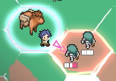
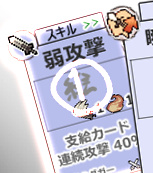

■2017-06-24 (土) 片道次回作3 新たな要素▼
ということで、前回に引き続き仮想画面写真に込めた要素について
ご紹介していきます。今回の話題は以下の通り！
●マップがヘクス方式に！
●敵やNPCがグループ化して登場！ するかも？
●安心の自動支給カード（仮）

※これは完成目標を描いた「絵」であってゲーム画面ではありません。
【マップがヘクス方式に！】
今回はマップがヘクス方式になります！
作るのが少し大変になる一方、以下のような利点があると考えました。
◆インターフェース面 → 指で押しやすいかも
スマートフォン展開の可能性を視野に入れているので、マスの押しやすさは重要です。
ヘクス型だと四角のマスよりも実質的に「押せる横幅」が増えるので、
たぶん指で押しやすい！ と考えました。
とにかく一定以上の横幅がないと、スマートフォンでは
選びたい場所をタップできませんからね。
◆見た目の面 → 目新しい
ヘクス型だと見た目が新しく感じるので、作品数が増えてきている昨今では
目を引きやすくなる可能性が期待できます。
PR力の面で大きな効果をもたらすかもしれません。
◆ゲーム面 → 移動方向に意味が出る
『片道勇者』では四角のマスで8方向に移動可能だったため、
「斜め移動」が基本的に有利でした。
「直進だけ行うメリットがあまりなかった」と言い換えてもいいかもしれません。
これがヘクスになる場合、斜め移動をするとその分「前進量」が減るので、
進行方向によるメリット、デメリットが以下のように変化します。
・「直進」 ： 探索量を絞る代わりに、闇から早く離れられる。
・「斜め移動」 ： 色々見られるが闇から離れにくい。
今作ではこの2択を、状況次第で切り換えていく感じになると思います。
なお、ずっと斜めに移動し続けても『闇』（強制スクロール）には
捕まらないと思うので、そこは以前同様だと思います。
『闇』が通常より速くなった場合や、急いで『闇』からの距離を稼ぎたい場合だけ、
前→ときどき斜め→前、みたいな感じで、
少しだけ進行方向を考える必要が出るくらいの変化だと思います。
ちなみに『片道勇者次回作』では、「右上」の方角が直進方向となります。
つまり、常に画面の右上あたりに向かって歩き続けることになります。
【敵やNPCがグループ化して登場！ するかも？】

今回は「NPCや敵がグループを組んで出現することがある」ようにする予定です。
『片道勇者』では味方が1マス内に最大4人いることがありましたが、
今作ではそれが敵にも適用されます。
敵が1ヘクス内に複数いると、味方の攻撃のターゲットがランダムになり、
また「後衛」にいる敵には「槍」「弓矢」などの特別な武器を使うか、
フォースやアイテムによる「エリア攻撃」を使わないと攻撃を当てることができません。
それっぽい「特徴」を持っていれば、
HPの低い敵から狙い撃ちにできたりするつもりです。
HPが非常に少ないが群れて出てくる敵（軽い連打の方が倒しやすい）や、
HPがそこそこあって連携してくる敵（重い一撃で各個撃破が有効）のように、
色々な敵バリエーションが出る中、戦うか逃げるか、
あるいは弱点を補えるスキルを取っておくか、
など、戦闘一つ取っても課題の幅を出せるようにしたいなと考えています。
また、キャラクターがグループを組めると何がいいって、
街のNPCや旅するNPCを組み合わせて登場させられること！
武器屋と防具屋が一緒にいるヘクスに話しかけたら、
防具屋「ボウグゥボウグゥ！！」 武器屋「ブーグゥー！！」
と一緒に叫んでいる光景などを作れるわけです。
『片道勇者プラス』では、少女ミラの父親が
ミラとセットで出ているか（両方生きていて、そばにいるか）を
判定できなかったために、父親にミラを会わせた後、
「父親が再登場した際は父親一人でも話の文脈が成立するように」と
真っ先に悲しい結末を付けてしまいましたが、NPCグループ化を導入できれば
その後も一緒に2人で旅をしているところに再会できたりしそうです。
その場合、敵に襲われたりして片方だけ生き残ってしまった場合の
セリフを考えるのが楽しみですね、ウェヒヒ！（悪い顔）
旅の商人は強い傭兵と一緒に旅をすることになるでしょうから、
旅商人を襲うのもきっと大仕事になるでしょう。
【安心の自動支給カード（仮）】

※2025/09/13：以下はまだ通常攻撃が実装されてなかった時期の話題です
クラス（職業）によっては「行動のたびに自動でもらえるカード」があります。
たとえば仮想画面写真の「弱攻撃」カードがそうです。
予定では、クラス「剣士」などは毎ドロー時に自動で
「弱攻撃」カードをもらうことができ、
「攻撃」カードが1枚も来なくても、必ず「弱攻撃」で1回分攻撃することができます。
つまり、「敵が目の前にいるのに攻撃できないターン」は
「剣士」の場合は発生しなくなります。
今回はコマンドをカードゲーム風にする都合上、回ってくる手札によっては
「敵が目の前にいるのに何もできない！」なんてことも発生しうるため、
この自動支給カードのように
「クラス別に毎行動、必ず手に入るカード」を設けたりして、
「運」によるストレスを低減させる要素を導入していくことを検討しています。
また、一部の「装備」を着けている場合も同様にカードが自動支給されます。
「レザーシールド」を装備すると「盾防御・レザーシールド」が使えるなど、そんな感じです。
プレイが上手になってカードの配分をうまく調整できるようになれば、
ドロー枠を1つ消費する「自動支給カード」がかえって邪魔になることもあるので、
熟練者の人は自動支給カードを持たないクラスの方が使いやすくなるかもしれません。
この辺り、熟練者とそうでない人で得意なクラスが棲み分けできるかもしれない点です。
と、こんな感じに、コマンドの管理をカードゲーム式にして発生しうる
「やりにくさ」への対策も、ある程度考え中です。
いきなりカードゲーム感バリバリな確率の渦に
放り込むのはいくら何でも過酷すぎるので、
従来のゲームと、本ゲームとの橋渡しができるような配慮は随所に入れたいですね。
こういったやりにくさ以外にも、人に見せるたびに新たなプレイアビリティの問題が
明らかになっていくでしょうから、その辺りの配慮には
細心の注意を払っていきたいと考えています。
とはいえ、まずはプロトタイプとして基本システムを作りあげるところから！
引き続き、開発を進めていきます。
2017-06-24 (土)  カテゴリ: 片道勇者2
カテゴリ: 片道勇者2
 カテゴリ: 片道勇者2
カテゴリ: 片道勇者2